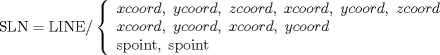
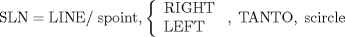
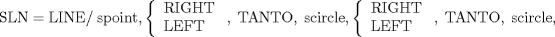
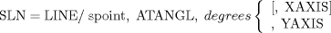
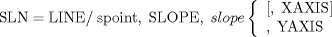
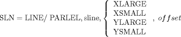
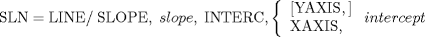

| 3.4. The Line (LINE) Definitions | ||
|---|---|---|
 | Chapter 3. Geometric Statements in APT |  |
| 3.4. The Line (LINE) Definitions | ||
|---|---|---|
| | Chapter 3. Geometric Statements in APT | |
A line is the intersection of two planes and is treated by the APT processor as a vertical plane surface (that is, perpendicular to the XY plane).

![[Note]](images/note.png) | Note |
|---|---|
The two points must not be coincidental |

| Note |
|---|---|
The modifiers RIGHT and LEFT are applied looking from the point toward the circle. |

| Note |
|---|---|
The modifiers RIGHT and LEFT are applied looking from the first referenced circle toward the second. |


The three lines illustrated in Figure 3.15 could be defined as follows:
LN1 = LINE/ PT1, SLOPE, 1, XAXIS LN2 = LINE/ PT2, SLOPE, .4142 LN3 = LINE/ PT3, SLOPE, 1.7321, YAXIS
SLN = LINE/ spoint, SLOPE, slope, sline
The lines L1 and L3 illustrated in Figure 3.16 could be defined as follows:
LN1 = LINE/ PT2, SLOPE, .26759, L2 LN3 = LINE/ PT3, SLOPE, -1, L1
SLN = LINE/ spoint, ATANGL, degrees, sline
| Note |
|---|---|
A positive angle is measured counter clockwise from the given line. A negative angle is measured clockwise. |
SLN = LINE/ spoint, PARLEL, sline
SLN = LINE/ spoint, PERPTO, sline

| Note |
|---|---|
The modifiers denote the direction in which the line is offset |
SLN = LINE/ INTOF, splane, splane
| Note |
|---|---|
The planes cannot be coplanar, parallel to one another, or both vertical (perpendicular to the XY plane). |

L1 = LINE/ SLOPE, .40403, INTERC, 3 L2 = LINE/ SLOPE, -.40403, INTERC, 3 $$ or L1 = LINE/ SLOPE, .40403, INTERC, YAXIS, 3 L2 = LINE/ SLOPE, -.40403, INTERC, XAXIS, 7.425 $$ or L1 = LINE/ ATANGL, 22, INTERC, 3 L2 = LINE/ ATANGL, -22, INTERC, 3 $$ or L1 = LINE/ ATANGL, 22, INTERC, YAXIS, 3 L2 = LINE/ ATANGL, -22, INTERC, XAXIS, 7.425
SLN = LINE/ spoint, TANTO, stabcyl, spoint
| Note |
|---|---|
A point on the TABCYL near the point of tangency is included to specify the desired point of tangency. (This point may be omitted if it is the same as the spoint specified immediately after the slash.) |
| |  | |
| 3.3. The Point (POINT) Definitions |  | 3.5. The Plane (PLANE) Definitions |